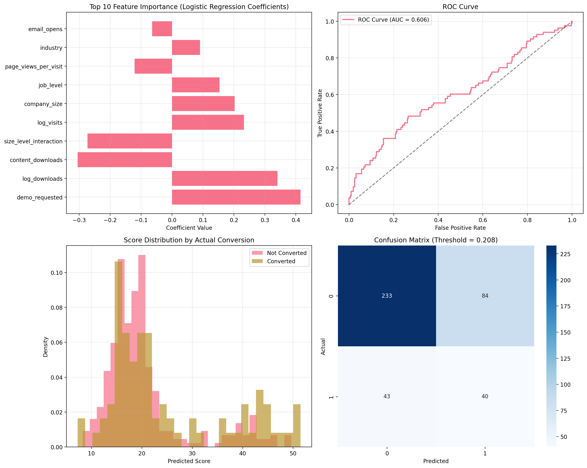
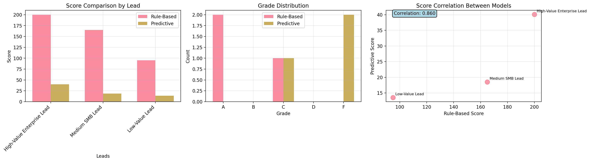

import pandas as pd
import numpy as np
import matplotlib.pyplot as plt
import seaborn as sns
from datetime import datetime, timedelta
from sklearn.model_selection import train_test_split
from sklearn.linear_model import LogisticRegression
from sklearn.preprocessing import StandardScaler, LabelEncoder
from sklearn.metrics import classification_report, roc_auc_score, confusion_matrix, roc_curve
import warnings
warnings.filterwarnings('ignore')
# Set style for plots
plt.style.use('default')
sns.set_palette("husl")28 Lead Scoring Tutorial
Generative AI
This tutorial was built with help of Claude 3.7 Sonnet from Anthropic.
Lead scoring is a methodology used to rank prospects against a scale that represents the perceived value each lead represents to the organization. This tutorial covers two fundamental approaches that represent the spectrum from simple rule-based systems to sophisticated machine learning models. The progression from simple interpretable models to predictive systems mirrors the evolution of data science in business applications.
In this tutorial, you’ll learn to implement and deploy:
- Rule-Based Model: A simple, interpretable approach using scoring based on demographic and behavioral data
- Predictive Intent-to-Buy Model: A machine learning approach using logistic regression
28.1 Learning Objectives
By the end of this tutorial, you will be able to:
- Implement rule-based and predictive lead scoring models
- Understand the trade-offs between interpretability and performance
- Deploy models in a production environment
- Evaluate and compare different scoring approaches
- Apply feature engineering techniques for lead scoring
Key takeaways are
- Model Selection: Choose the right model based on business needs, data availability, and interpretability requirements
- Ensemble Approaches: Combining different models can provide both accuracy and explainability
- Production Readiness: Successful deployment requires careful consideration of monitoring, maintenance, and governance
- Continuous Improvement: Models should evolve with changing business conditions and new data
28.2 Setting Up
Here is some Python set-up code to import functions and libraries for the tutorial.
28.3 Rule-Based Lead Scoring Model
Concept Overview
This model is both additive and subtractive. It starts with a base score of 100 and adjusts it up or down based on demographic and behavioral factors. This approach is transparent, easily understood by sales teams, and can be quickly implemented. However, it is a static system that is somewhat subjective and requires tuning.
The model architecture consists of:
- Base Score: 100 points (neutral lead)
- Demographic Factors: Company size, industry relevance, geographic location, job title/seniority
- Behavioral Factors: Website engagement, email interaction, content downloads, event participation
Implementation
class RuleBasedLeadScoring:
def __init__(self):
self.base_score = 100
# Define scoring rules
self.demographic_rules = {
'company_size': {
'enterprise': 25, # 1000+ employees
'mid_market': 15, # 100-999 employees
'smb': 5, # 10-99 employees
'micro': -10 # <10 employees
},
'industry': {
'technology': 20,
'finance': 15,
'healthcare': 10,
'manufacturing': 5,
'other': 0
},
'geography': {
'tier1': 15, # Major markets
'tier2': 10, # Secondary markets
'tier3': 0, # Other markets
'international': -5
},
'job_level': {
'c_level': 25,
'vp_director': 20,
'manager': 10,
'individual': 0,
'student': -20
}
}
self.behavioral_rules = {
'website_visits': {
'high': 20, # 10+ visits in 30 days
'medium': 10, # 3-9 visits
'low': 0, # 1-2 visits
'none': -10 # 0 visits
},
'email_engagement': {
'high': 15, # Opens + clicks
'medium': 5, # Opens only
'low': -5 # No opens
},
'content_downloads': {
'multiple': 20, # 3+ downloads
'single': 10, # 1-2 downloads
'none': 0
},
'demo_request': {
'yes': 30,
'no': 0
}
}
def calculate_demographic_score(self, lead_data):
"""Calculate demographic component of lead score"""
score = 0
breakdown = {}
for factor, rules in self.demographic_rules.items():
if factor in lead_data:
value = lead_data[factor]
factor_score = rules.get(value, 0)
score += factor_score
breakdown[factor] = factor_score
return score, breakdown
def calculate_behavioral_score(self, lead_data):
"""Calculate behavioral component of lead score"""
score = 0
breakdown = {}
for factor, rules in self.behavioral_rules.items():
if factor in lead_data:
value = lead_data[factor]
factor_score = rules.get(value, 0)
score += factor_score
breakdown[factor] = factor_score
return score, breakdown
def calculate_lead_score(self, lead_data):
"""Calculate total lead score"""
demographic_score, demo_breakdown = self.calculate_demographic_score(lead_data)
behavioral_score, behav_breakdown = self.calculate_behavioral_score(lead_data)
total_score = self.base_score + demographic_score + behavioral_score
# Ensure score stays within reasonable bounds
total_score = max(0, min(200, total_score))
return {
'total_score': total_score,
'demographic_score': demographic_score,
'behavioral_score': behavioral_score,
'demographic_breakdown': demo_breakdown,
'behavioral_breakdown': behav_breakdown,
'grade': self.assign_grade(total_score)
}
def assign_grade(self, score):
"""Assign letter grade based on score"""
if score >= 150:
return 'A'
elif score >= 120:
return 'B'
elif score >= 90:
return 'C'
elif score >= 60:
return 'D'
else:
return 'F'Example Usage
# Initialize the rule-based scorer
rule_scorer = RuleBasedLeadScoring()
# Sample lead data
sample_leads = [
{
'name': 'High-Value Enterprise Lead',
'company_size': 'enterprise',
'industry': 'technology',
'geography': 'tier1',
'job_level': 'vp_director',
'website_visits': 'high',
'email_engagement': 'high',
'content_downloads': 'multiple',
'demo_request': 'yes'
},
{
'name': 'Medium SMB Lead',
'company_size': 'smb',
'industry': 'manufacturing',
'geography': 'tier2',
'job_level': 'manager',
'website_visits': 'medium',
'email_engagement': 'medium',
'content_downloads': 'single',
'demo_request': 'no'
},
{
'name': 'Low-Value Lead',
'company_size': 'micro',
'industry': 'other',
'geography': 'tier3',
'job_level': 'individual',
'website_visits': 'low',
'email_engagement': 'low',
'content_downloads': 'none',
'demo_request': 'no'
}
]
# Score all sample leads
print("Rule-Based Lead Scoring Results:")
print("=" * 50)
for lead in sample_leads:
result = rule_scorer.calculate_lead_score(lead)
print(f"\n{lead['name']}:")
print(f" Total Score: {result['total_score']} (Grade: {result['grade']})")
print(f" Demographic Score: {result['demographic_score']}")
print(f" Behavioral Score: {result['behavioral_score']}")
# Show breakdown
print(" Breakdown:")
for factor, score in result['demographic_breakdown'].items():
print(f" {factor}: {score}")
for factor, score in result['behavioral_breakdown'].items():
print(f" {factor}: {score}")Rule-Based Lead Scoring Results:
==================================================
High-Value Enterprise Lead:
Total Score: 200 (Grade: A)
Demographic Score: 80
Behavioral Score: 85
Breakdown:
company_size: 25
industry: 20
geography: 15
job_level: 20
website_visits: 20
email_engagement: 15
content_downloads: 20
demo_request: 30
Medium SMB Lead:
Total Score: 155 (Grade: A)
Demographic Score: 30
Behavioral Score: 25
Breakdown:
company_size: 5
industry: 5
geography: 10
job_level: 10
website_visits: 10
email_engagement: 5
content_downloads: 10
demo_request: 0
Low-Value Lead:
Total Score: 85 (Grade: D)
Demographic Score: -10
Behavioral Score: -5
Breakdown:
company_size: -10
industry: 0
geography: 0
job_level: 0
website_visits: 0
email_engagement: -5
content_downloads: 0
demo_request: 0Advantages and Limitations
Rule-Based Model Trade-offs
- Advantages
- Transparent and explainable to sales teams
- Quick to implement and modify
- Provides immediate scoring without historical data
- Easy to incorporate business logic and constraints
- Limitations
- Static rules may not capture complex patterns
- Requires manual rule tuning and maintenance
- May not adapt to changing customer behavior
- Limited predictive accuracy compared to ML models
28.4 Predictive Intent-to-Buy Model (Logistic Regression)
Concept Overview
This model uses machine learning to predict the probability that a lead will convert to a customer. It learns patterns from historical data and can capture complex interactions between features that rule-based systems might miss.
Generate Sample Training Data
First, let’s create synthetic data that resembles real lead scoring scenarios:
def generate_sample_data(n_samples=2000):
"""Generate synthetic lead data for training"""
np.random.seed(42)
# Generate features with realistic distributions
data = {
'company_size': np.random.choice(['micro', 'smb', 'mid_market', 'enterprise'],
n_samples, p=[0.4, 0.3, 0.2, 0.1]),
'industry': np.random.choice(['technology', 'finance', 'healthcare', 'manufacturing', 'other'],
n_samples, p=[0.25, 0.2, 0.2, 0.2, 0.15]),
'geography': np.random.choice(['tier1', 'tier2', 'tier3', 'international'],
n_samples, p=[0.3, 0.3, 0.3, 0.1]),
'job_level': np.random.choice(['individual', 'manager', 'vp_director', 'c_level'],
n_samples, p=[0.4, 0.3, 0.2, 0.1]),
'website_visits_30d': np.random.poisson(5, n_samples),
'email_opens': np.random.poisson(3, n_samples),
'email_clicks': np.random.poisson(1, n_samples),
'content_downloads': np.random.poisson(2, n_samples),
'demo_requested': np.random.choice([0, 1], n_samples, p=[0.85, 0.15]),
'days_since_first_visit': np.random.exponential(30, n_samples),
'page_views_per_visit': np.random.gamma(2, 2, n_samples)
}
df = pd.DataFrame(data)
# Generate realistic target variable based on features
# Create logistic function with realistic coefficients
conversion_logit = (
-2.5 + # Base intercept (low conversion rate)
0.8 * (df['company_size'] == 'enterprise') +
0.6 * (df['company_size'] == 'mid_market') +
0.3 * (df['company_size'] == 'smb') +
0.7 * (df['job_level'] == 'c_level') +
0.5 * (df['job_level'] == 'vp_director') +
0.3 * (df['job_level'] == 'manager') +
0.4 * (df['industry'] == 'technology') +
0.3 * (df['industry'] == 'finance') +
0.05 * np.log1p(df['website_visits_30d']) +
0.1 * np.log1p(df['email_clicks']) +
1.2 * df['demo_requested'] +
0.02 * np.log1p(df['content_downloads']) +
np.random.normal(0, 0.3, n_samples) # Add noise
)
# Convert logit to probability
conversion_prob = 1 / (1 + np.exp(-conversion_logit))
# Generate binary outcome
df['converted'] = np.random.binomial(1, conversion_prob, n_samples)
return df
# Generate training data
print("Generating synthetic training data...")
training_data = generate_sample_data(2000)
# Display data summary
print(f"\nDataset shape: {training_data.shape}")
print(f"Conversion rate: {training_data['converted'].mean():.2%}")
print("\nFeature distributions:")
print(training_data.describe())Generating synthetic training data...
Dataset shape: (2000, 12)
Conversion rate: 20.85%
Feature distributions:
website_visits_30d email_opens email_clicks content_downloads \
count 2000.000000 2000.000000 2000.000000 2000.000000
mean 5.037000 3.031000 0.980000 1.977500
std 2.305491 1.759712 0.976769 1.433883
min 0.000000 0.000000 0.000000 0.000000
25% 3.000000 2.000000 0.000000 1.000000
50% 5.000000 3.000000 1.000000 2.000000
75% 6.250000 4.000000 2.000000 3.000000
max 15.000000 11.000000 6.000000 9.000000
demo_requested days_since_first_visit page_views_per_visit \
count 2000.000000 2000.000000 2000.000000
mean 0.150000 30.697617 3.887503
std 0.357161 31.304723 2.763090
min 0.000000 0.055381 0.050217
25% 0.000000 8.690626 1.832841
50% 0.000000 20.589595 3.234568
75% 0.000000 43.349152 5.212053
max 1.000000 273.605293 21.508675
converted
count 2000.000000
mean 0.208500
std 0.406338
min 0.000000
25% 0.000000
50% 0.000000
75% 0.000000
max 1.000000 Model Implementation
class PredictiveLeadScoring:
def __init__(self):
self.model = LogisticRegression(random_state=42, max_iter=1000)
self.scaler = StandardScaler()
self.label_encoders = {}
self.feature_names = []
self.is_trained = False
def prepare_features(self, df, fit_encoders=False):
"""Prepare features for modeling"""
df_processed = df.copy()
# Encode categorical variables
categorical_columns = ['company_size', 'industry', 'geography', 'job_level']
for col in categorical_columns:
if col in df_processed.columns:
if fit_encoders or col not in self.label_encoders:
self.label_encoders[col] = LabelEncoder()
df_processed[col] = self.label_encoders[col].fit_transform(df_processed[col])
else:
# Handle unseen categories gracefully
df_processed[col] = df_processed[col].map(
dict(zip(self.label_encoders[col].classes_,
self.label_encoders[col].transform(self.label_encoders[col].classes_)))
).fillna(-1) # Assign -1 to unseen categories
# Create engineered features
if 'website_visits_30d' in df_processed.columns:
df_processed['visits_per_day'] = df_processed['website_visits_30d'] / 30
df_processed['high_engagement'] = (df_processed['website_visits_30d'] > 10).astype(int)
df_processed['log_visits'] = np.log1p(df_processed['website_visits_30d'])
if 'email_opens' in df_processed.columns and 'email_clicks' in df_processed.columns:
df_processed['email_ctr'] = df_processed['email_clicks'] / (df_processed['email_opens'] + 1)
df_processed['email_engagement_score'] = df_processed['email_opens'] + 2 * df_processed['email_clicks']
if 'content_downloads' in df_processed.columns:
df_processed['log_downloads'] = np.log1p(df_processed['content_downloads'])
if 'days_since_first_visit' in df_processed.columns:
df_processed['recency_score'] = 1 / (1 + df_processed['days_since_first_visit'] / 30)
# Create interaction features
if 'company_size' in df_processed.columns and 'job_level' in df_processed.columns:
df_processed['size_level_interaction'] = df_processed['company_size'] * df_processed['job_level']
return df_processed
def train(self, X, y):
"""Train the predictive model"""
print("Preparing features for training...")
# Prepare features
X_processed = self.prepare_features(X, fit_encoders=True)
self.feature_names = X_processed.columns.tolist()
# Split data
X_train, X_test, y_train, y_test = train_test_split(
X_processed, y, test_size=0.2, random_state=42, stratify=y
)
print(f"Training set size: {X_train.shape[0]}")
print(f"Test set size: {X_test.shape[0]}")
# Scale features
X_train_scaled = self.scaler.fit_transform(X_train)
X_test_scaled = self.scaler.transform(X_test)
# Train model
print("Training logistic regression model...")
self.model.fit(X_train_scaled, y_train)
self.is_trained = True
# Evaluate model
y_pred = self.model.predict(X_test_scaled)
y_pred_proba = self.model.predict_proba(X_test_scaled)[:, 1]
print("\nModel Performance:")
print("=" * 40)
print(classification_report(y_test, y_pred))
auc_score = roc_auc_score(y_test, y_pred_proba)
print(f"ROC AUC Score: {auc_score:.3f}")
# Store test results for visualization
self.test_results = {
'y_true': y_test,
'y_pred_proba': y_pred_proba,
'X_test': X_test
}
return X_test, y_test, y_pred_proba
def predict_lead_score(self, lead_data):
"""Predict lead score for new data"""
if not self.is_trained:
raise ValueError("Model must be trained before making predictions")
# Convert to DataFrame if necessary
if isinstance(lead_data, dict):
lead_df = pd.DataFrame([lead_data])
else:
lead_df = lead_data.copy()
# Prepare features
lead_processed = self.prepare_features(lead_df, fit_encoders=False)
# Ensure all required features are present
for feature in self.feature_names:
if feature not in lead_processed.columns:
lead_processed[feature] = 0
lead_processed = lead_processed[self.feature_names]
# Scale features
lead_scaled = self.scaler.transform(lead_processed)
# Predict probability
probability = self.model.predict_proba(lead_scaled)[:, 1]
# Convert to 0-100 score
score = probability * 100
return {
'probability': probability[0],
'score': score[0],
'grade': self.assign_grade(score[0])
}
def assign_grade(self, score):
"""Assign letter grade based on score"""
if score >= 80:
return 'A'
elif score >= 60:
return 'B'
elif score >= 40:
return 'C'
elif score >= 20:
return 'D'
else:
return 'F'
def get_feature_importance(self):
"""Get feature importance from the model"""
if not self.is_trained:
raise ValueError("Model must be trained before getting feature importance")
importance_df = pd.DataFrame({
'feature': self.feature_names,
'coefficient': self.model.coef_[0],
'abs_coefficient': np.abs(self.model.coef_[0])
}).sort_values('abs_coefficient', ascending=False)
return importance_dfModel Training
# Prepare data for training
X = training_data.drop('converted', axis=1)
y = training_data['converted']
# Initialize and train the predictive model
predictive_model = PredictiveLeadScoring()
X_test, y_test, y_pred_proba = predictive_model.train(X, y)Preparing features for training...
Training set size: 1600
Test set size: 400
Training logistic regression model...
Model Performance:
========================================
precision recall f1-score support
0 0.80 1.00 0.89 317
1 1.00 0.04 0.07 83
accuracy 0.80 400
macro avg 0.90 0.52 0.48 400
weighted avg 0.84 0.80 0.72 400
ROC AUC Score: 0.606Analysis and Visualization
# Create comprehensive model analysis
fig, axes = plt.subplots(2, 2, figsize=(15, 12))
# 1. Feature Importance
importance_df = predictive_model.get_feature_importance()
top_features = importance_df.head(10)
axes[0, 0].barh(range(len(top_features)), top_features['coefficient'])
axes[0, 0].set_yticks(range(len(top_features)))
axes[0, 0].set_yticklabels(top_features['feature'])
axes[0, 0].set_xlabel('Coefficient Value')
axes[0, 0].set_title('Top 10 Feature Importance (Logistic Regression Coefficients)')
axes[0, 0].grid(True, alpha=0.3)
# 2. ROC Curve
fpr, tpr, _ = roc_curve(y_test, y_pred_proba)
auc_score = roc_auc_score(y_test, y_pred_proba)
axes[0, 1].plot(fpr, tpr, linewidth=2, label=f'ROC Curve (AUC = {auc_score:.3f})')
axes[0, 1].plot([0, 1], [0, 1], 'k--', alpha=0.5)
axes[0, 1].set_xlabel('False Positive Rate')
axes[0, 1].set_ylabel('True Positive Rate')
axes[0, 1].set_title('ROC Curve')
axes[0, 1].legend()
axes[0, 1].grid(True, alpha=0.3)
# 3. Score Distribution by Conversion
converted_scores = y_pred_proba[y_test == 1] * 100
not_converted_scores = y_pred_proba[y_test == 0] * 100
axes[1, 0].hist(not_converted_scores, bins=30, alpha=0.7, label='Not Converted', density=True)
axes[1, 0].hist(converted_scores, bins=30, alpha=0.7, label='Converted', density=True)
axes[1, 0].set_xlabel('Predicted Score')
axes[1, 0].set_ylabel('Density')
axes[1, 0].set_title('Score Distribution by Actual Conversion')
axes[1, 0].legend()
axes[1, 0].grid(True, alpha=0.3)
# 4. Confusion Matrix at optimal threshold
from sklearn.metrics import precision_recall_curve
precision, recall, thresholds = precision_recall_curve(y_test, y_pred_proba)
f1_scores = 2 * (precision * recall) / (precision + recall)
optimal_threshold = thresholds[np.argmax(f1_scores)]
y_pred_optimal = (y_pred_proba >= optimal_threshold).astype(int)
cm = confusion_matrix(y_test, y_pred_optimal)
sns.heatmap(cm, annot=True, fmt='d', cmap='Blues', ax=axes[1, 1])
axes[1, 1].set_xlabel('Predicted')
axes[1, 1].set_ylabel('Actual')
axes[1, 1].set_title(f'Confusion Matrix (Threshold = {optimal_threshold:.3f})')
plt.tight_layout()
plt.show()
print(f"\nOptimal threshold for F1-score: {optimal_threshold:.3f}")
print(f"F1-score at optimal threshold: {np.max(f1_scores):.3f}")
Optimal threshold for F1-score: 0.208
F1-score at optimal threshold: 0.386Example Predictions
# Test the same leads we used for rule-based scoring
sample_leads_predictive = [
{
'company_size': 'enterprise',
'industry': 'technology',
'geography': 'tier1',
'job_level': 'vp_director',
'website_visits_30d': 15,
'email_opens': 8,
'email_clicks': 4,
'content_downloads': 5,
'demo_requested': 1,
'days_since_first_visit': 10,
'page_views_per_visit': 8
},
{
'company_size': 'smb',
'industry': 'manufacturing',
'geography': 'tier2',
'job_level': 'manager',
'website_visits_30d': 6,
'email_opens': 3,
'email_clicks': 1,
'content_downloads': 2,
'demo_requested': 0,
'days_since_first_visit': 25,
'page_views_per_visit': 4
},
{
'company_size': 'micro',
'industry': 'other',
'geography': 'tier3',
'job_level': 'individual',
'website_visits_30d': 2,
'email_opens': 1,
'email_clicks': 0,
'content_downloads': 0,
'demo_requested': 0,
'days_since_first_visit': 60,
'page_views_per_visit': 2
}
]
lead_names = ['High-Value Enterprise Lead', 'Medium SMB Lead', 'Low-Value Lead']
print("Predictive Lead Scoring Results:")
print("=" * 50)
for i, lead in enumerate(sample_leads_predictive):
result = predictive_model.predict_lead_score(lead)
print(f"\n{lead_names[i]}:")
print(f" Probability: {result['probability']:.3f}")
print(f" Score: {result['score']:.1f}")
print(f" Grade: {result['grade']}")Predictive Lead Scoring Results:
==================================================
High-Value Enterprise Lead:
Probability: 0.401
Score: 40.1
Grade: C
Medium SMB Lead:
Probability: 0.185
Score: 18.5
Grade: F
Low-Value Lead:
Probability: 0.135
Score: 13.5
Grade: F28.5 Model Comparison Framework
class LeadScoringComparison:
def __init__(self, rule_based_model, predictive_model):
self.rule_based = rule_based_model
self.predictive = predictive_model
def compare_models_on_sample(self, sample_leads, lead_names):
"""Compare both models on sample leads"""
results = []
for i, lead in enumerate(sample_leads):
# Rule-based scoring (convert predictive lead format to rule-based format)
rb_lead = self._convert_lead_format(lead)
rb_result = self.rule_based.calculate_lead_score(rb_lead)
# Predictive scoring
pred_result = self.predictive.predict_lead_score(lead)
results.append({
'lead_name': lead_names[i],
'rule_based_score': rb_result['total_score'],
'rule_based_grade': rb_result['grade'],
'predictive_score': pred_result['score'],
'predictive_grade': pred_result['grade'],
'predictive_probability': pred_result['probability']
})
return pd.DataFrame(results)
def _convert_lead_format(self, predictive_lead):
"""Convert predictive lead format to rule-based format"""
# Map numerical behavioral data to categories
rb_lead = {
'company_size': predictive_lead['company_size'],
'industry': predictive_lead['industry'],
'geography': predictive_lead['geography'],
'job_level': predictive_lead['job_level']
}
# Convert numerical behavioral data to categories
visits = predictive_lead.get('website_visits_30d', 0)
if visits >= 10:
rb_lead['website_visits'] = 'high'
elif visits >= 3:
rb_lead['website_visits'] = 'medium'
elif visits >= 1:
rb_lead['website_visits'] = 'low'
else:
rb_lead['website_visits'] = 'none'
# Email engagement
opens = predictive_lead.get('email_opens', 0)
clicks = predictive_lead.get('email_clicks', 0)
if clicks > 0:
rb_lead['email_engagement'] = 'high'
elif opens > 0:
rb_lead['email_engagement'] = 'medium'
else:
rb_lead['email_engagement'] = 'low'
# Content downloads
downloads = predictive_lead.get('content_downloads', 0)
if downloads >= 3:
rb_lead['content_downloads'] = 'multiple'
elif downloads >= 1:
rb_lead['content_downloads'] = 'single'
else:
rb_lead['content_downloads'] = 'none'
# Demo request
rb_lead['demo_request'] = 'yes' if predictive_lead.get('demo_requested', 0) else 'no'
return rb_lead
def plot_comparison(self, comparison_df):
"""Visualize model comparison"""
fig, axes = plt.subplots(1, 3, figsize=(18, 5))
# Score comparison
x = np.arange(len(comparison_df))
width = 0.35
axes[0].bar(x - width/2, comparison_df['rule_based_score'], width,
label='Rule-Based', alpha=0.8)
axes[0].bar(x + width/2, comparison_df['predictive_score'], width,
label='Predictive', alpha=0.8)
axes[0].set_xlabel('Leads')
axes[0].set_ylabel('Score')
axes[0].set_title('Score Comparison by Lead')
axes[0].set_xticks(x)
axes[0].set_xticklabels(comparison_df['lead_name'], rotation=45, ha='right')
axes[0].legend()
axes[0].grid(True, alpha=0.3)
# Grade distribution
grade_counts_rb = comparison_df['rule_based_grade'].value_counts()
grade_counts_pred = comparison_df['predictive_grade'].value_counts()
all_grades = ['A', 'B', 'C', 'D', 'F']
rb_counts = [grade_counts_rb.get(grade, 0) for grade in all_grades]
pred_counts = [grade_counts_pred.get(grade, 0) for grade in all_grades]
x_grades = np.arange(len(all_grades))
axes[1].bar(x_grades - width/2, rb_counts, width, label='Rule-Based', alpha=0.8)
axes[1].bar(x_grades + width/2, pred_counts, width, label='Predictive', alpha=0.8)
axes[1].set_xlabel('Grade')
axes[1].set_ylabel('Count')
axes[1].set_title('Grade Distribution')
axes[1].set_xticks(x_grades)
axes[1].set_xticklabels(all_grades)
axes[1].legend()
axes[1].grid(True, alpha=0.3)
# Correlation scatter plot
axes[2].scatter(comparison_df['rule_based_score'], comparison_df['predictive_score'],
s=100, alpha=0.7)
# Add lead names as annotations
for i, txt in enumerate(comparison_df['lead_name']):
axes[2].annotate(txt,
(comparison_df['rule_based_score'].iloc[i],
comparison_df['predictive_score'].iloc[i]),
xytext=(5, 5), textcoords='offset points', fontsize=8)
axes[2].set_xlabel('Rule-Based Score')
axes[2].set_ylabel('Predictive Score')
axes[2].set_title('Score Correlation Between Models')
axes[2].grid(True, alpha=0.3)
# Add correlation line
correlation = comparison_df['rule_based_score'].corr(comparison_df['predictive_score'])
axes[2].text(0.05, 0.95, f'Correlation: {correlation:.3f}',
transform=axes[2].transAxes, fontsize=10,
bbox=dict(boxstyle="round,pad=0.3", facecolor="lightblue"))
plt.tight_layout()
plt.show()
# Perform comparison
comparison = LeadScoringComparison(rule_scorer, predictive_model)
comparison_results = comparison.compare_models_on_sample(sample_leads_predictive, lead_names)
print("Model Comparison Results:")
print("=" * 60)
print(comparison_results.to_string(index=False))
# Visualize comparison
comparison.plot_comparison(comparison_results)Model Comparison Results:
============================================================
lead_name rule_based_score rule_based_grade predictive_score predictive_grade predictive_probability
High-Value Enterprise Lead 200 A 40.062423 C 0.400624
Medium SMB Lead 165 A 18.503324 F 0.185033
Low-Value Lead 95 C 13.530503 F 0.135305

28.6 Deployment Architecture
Production API Implementation
# Flask API for production deployment
deployment_code = '''
from flask import Flask, request, jsonify
import pickle
import logging
from datetime import datetime
import numpy as np
import pandas as pd
app = Flask(__name__)
# Configure logging
logging.basicConfig(level=logging.INFO)
logger = logging.getLogger(__name__)
# Load models (in production, use proper model versioning)
try:
with open('rule_based_model.pkl', 'rb') as f:
rule_based_model = pickle.load(f)
with open('predictive_model.pkl', 'rb') as f:
predictive_model = pickle.load(f)
logger.info("Models loaded successfully")
except FileNotFoundError:
logger.error("Model files not found. Please train and save models first.")
rule_based_model = None
predictive_model = None
@app.route('/health', methods=['GET'])
def health_check():
"""Health check endpoint"""
return jsonify({
'status': 'healthy',
'timestamp': datetime.now().isoformat(),
'models_loaded': {
'rule_based': rule_based_model is not None,
'predictive': predictive_model is not None
}
})
@app.route('/score_lead', methods=['POST'])
def score_lead():
"""Score a lead using both models"""
try:
lead_data = request.json
if not lead_data:
return jsonify({'error': 'No data provided'}), 400
# Validate required fields
required_fields = ['company_size', 'industry', 'geography', 'job_level']
missing_fields = [field for field in required_fields if field not in lead_data]
if missing_fields:
return jsonify({
'error': f'Missing required fields: {missing_fields}'
}), 400
# Score with both models
rb_result = rule_based_model.calculate_lead_score(lead_data)
pred_result = predictive_model.predict_lead_score(lead_data)
# Determine recommendation based on ensemble
recommendation = determine_action(rb_result['total_score'], pred_result['score'])
response = {
'lead_id': lead_data.get('lead_id', 'unknown'),
'timestamp': datetime.now().isoformat(),
'rule_based': {
'score': int(rb_result['total_score']),
'grade': rb_result['grade'],
'breakdown': {
'demographic': int(rb_result['demographic_score']),
'behavioral': int(rb_result['behavioral_score'])
}
},
'predictive': {
'score': round(pred_result['score'], 1),
'probability': round(pred_result['probability'], 3),
'grade': pred_result['grade']
},
'ensemble': {
'average_score': round((rb_result['total_score'] + pred_result['score']) / 2, 1),
'recommendation': recommendation
}
}
logger.info(f"Scored lead {lead_data.get('lead_id', 'unknown')}: "
f"RB={rb_result['total_score']}, Pred={pred_result['score']:.1f}")
return jsonify(response)
except Exception as e:
logger.error(f"Error scoring lead: {str(e)}")
return jsonify({'error': 'Internal server error'}), 500
@app.route('/batch_score', methods=['POST'])
def batch_score():
"""Score multiple leads at once"""
try:
batch_data = request.json
if not batch_data or 'leads' not in batch_data:
return jsonify({'error': 'No leads data provided'}), 400
leads = batch_data['leads']
results = []
for i, lead_data in enumerate(leads):
try:
# Score individual lead
rb_result = rule_based_model.calculate_lead_score(lead_data)
pred_result = predictive_model.predict_lead_score(lead_data)
results.append({
'lead_index': i,
'lead_id': lead_data.get('lead_id', f'batch_{i}'),
'rule_based_score': int(rb_result['total_score']),
'predictive_score': round(pred_result['score'], 1),
'recommendation': determine_action(rb_result['total_score'], pred_result['score'])
})
except Exception as e:
results.append({
'lead_index': i,
'lead_id': lead_data.get('lead_id', f'batch_{i}'),
'error': str(e)
})
return jsonify({
'timestamp': datetime.now().isoformat(),
'total_leads': len(leads),
'successful_scores': len([r for r in results if 'error' not in r]),
'results': results
})
except Exception as e:
logger.error(f"Error in batch scoring: {str(e)}")
return jsonify({'error': 'Internal server error'}), 500
def determine_action(rb_score, pred_score):
"""Determine recommended action based on ensemble scores"""
avg_score = (rb_score + pred_score) / 2
if avg_score >= 120:
return "immediate_outreach"
elif avg_score >= 90:
return "nurture_campaign"
elif avg_score >= 60:
return "educational_content"
else:
return "low_priority"
if __name__ == '__main__':
app.run(debug=True, host='0.0.0.0', port=5000)
'''
print("Production API Code:")
print("=" * 50)
print("The above code shows a Flask API implementation for production deployment.")
print("Key features include:")
print("- Health check endpoint")
print("- Single lead scoring")
print("- Batch lead scoring")
print("- Error handling and logging")
print("- Model ensemble recommendations")Production API Code:
==================================================
The above code shows a Flask API implementation for production deployment.
Key features include:
- Health check endpoint
- Single lead scoring
- Batch lead scoring
- Error handling and logging
- Model ensemble recommendationsModel Monitoring and Maintenance
class ModelMonitoring:
def __init__(self):
self.prediction_log = []
self.performance_metrics = {}
def log_prediction(self, lead_data, prediction, actual_outcome=None):
"""Log predictions for monitoring"""
log_entry = {
'timestamp': datetime.now(),
'lead_data': lead_data,
'prediction': prediction,
'actual_outcome': actual_outcome
}
self.prediction_log.append(log_entry)
def calculate_drift_metrics(self, new_data, reference_data):
"""Calculate data drift metrics"""
drift_metrics = {}
for column in reference_data.columns:
if column in new_data.columns:
if new_data[column].dtype in ['int64', 'float64']:
# For numerical features, use KS test
from scipy.stats import ks_2samp
statistic, p_value = ks_2samp(reference_data[column], new_data[column])
drift_metrics[column] = {
'type': 'numerical',
'ks_statistic': statistic,
'p_value': p_value,
'drift_detected': p_value < 0.05
}
else:
# For categorical features, use chi-square test
ref_dist = reference_data[column].value_counts(normalize=True)
new_dist = new_data[column].value_counts(normalize=True)
# Align distributions
all_categories = set(ref_dist.index) | set(new_dist.index)
ref_aligned = [ref_dist.get(cat, 0) for cat in all_categories]
new_aligned = [new_dist.get(cat, 0) for cat in all_categories]
from scipy.stats import chisquare
statistic, p_value = chisquare(new_aligned, ref_aligned)
drift_metrics[column] = {
'type': 'categorical',
'chi2_statistic': statistic,
'p_value': p_value,
'drift_detected': p_value < 0.05
}
return drift_metrics
def performance_report(self):
"""Generate performance monitoring report"""
if not self.prediction_log:
return "No predictions logged yet."
# Calculate basic statistics
total_predictions = len(self.prediction_log)
predictions_with_outcomes = len([log for log in self.prediction_log
if log['actual_outcome'] is not None])
report = f"""
Model Performance Report
========================
Total Predictions: {total_predictions}
Predictions with Outcomes: {predictions_with_outcomes}
Data Collection Period: {self.prediction_log[0]['timestamp'].date()} to {self.prediction_log[-1]['timestamp'].date()}
Prediction Distribution:
- High Priority (A/B): {len([log for log in self.prediction_log if log['prediction'].get('grade') in ['A', 'B']])}
- Medium Priority (C): {len([log for log in self.prediction_log if log['prediction'].get('grade') == 'C'])}
- Low Priority (D/F): {len([log for log in self.prediction_log if log['prediction'].get('grade') in ['D', 'F']])}
"""
return report
# Example monitoring setup
monitor = ModelMonitoring()
# Simulate some predictions
for lead in sample_leads_predictive[:2]:
pred_result = predictive_model.predict_lead_score(lead)
monitor.log_prediction(lead, pred_result, actual_outcome=np.random.choice([0, 1]))
print(monitor.performance_report())
Model Performance Report
========================
Total Predictions: 2
Predictions with Outcomes: 2
Data Collection Period: 2025-05-22 to 2025-05-22
Prediction Distribution:
- High Priority (A/B): 0
- Medium Priority (C): 1
- Low Priority (D/F): 1
28.7 Exercises
Rule Modification Challenge
Exercise: Rule Modification Challenge
Modify the rule-based model to include new factors:
- Add Company Revenue Factor: Create scoring rules for different revenue brackets
- Implement Time Decay: Make behavioral scores decay over time
- Industry-Specific Variations: Create different scoring rules for different industries
- Geographic Multipliers: Apply different weights based on market potential
Implement these changes and compare the results with the original model.
# Template for Exercise 1
class EnhancedRuleBasedScoring(RuleBasedLeadScoring):
def __init__(self):
super().__init__()
# TODO: Add company revenue rules
self.revenue_rules = {
# Students to implement
}
# TODO: Add time decay parameters
self.time_decay_factor = 0.95 # 5% decay per week
# TODO: Add industry-specific multipliers
self.industry_multipliers = {
# Students to implement
}
def apply_time_decay(self, behavioral_score, days_since_action):
"""Apply time decay to behavioral scores"""
# TODO: Students to implement
return behavioral_score
def apply_industry_multiplier(self, total_score, industry):
"""Apply industry-specific multipliers"""
# TODO: Students to implement
return total_score
print("Exercise 1 Template: Enhance the rule-based model with additional factors")Exercise 1 Template: Enhance the rule-based model with additional factorsFeature Engineering Laboratory
Exercise: Feature Engineering Laboratory
Enhance the predictive model with advanced feature engineering:
- RFM Features: Implement recency, frequency, and monetary features
- Polynomial Features: Create interaction and polynomial terms
- Time-based Features: Extract patterns from temporal data
- Text Features: If available, extract features from email content or form submissions
Compare model performance before and after feature engineering.
class AdvancedFeatureEngineering:
def __init__(self):
pass
def create_rfm_features(self, df):
"""Create Recency, Frequency, Monetary features"""
# TODO: Students to implement
# Recency: Days since last interaction
# Frequency: Number of interactions in period
# Monetary: Value indicators (company size, industry)
return df
def create_polynomial_features(self, df, degree=2):
"""Create polynomial and interaction features"""
# TODO: Students to implement using sklearn.preprocessing.PolynomialFeatures
return df
def create_temporal_features(self, df):
"""Extract time-based patterns"""
# TODO: Students to implement
# - Day of week patterns
# - Time of day patterns
# - Seasonal patterns
return df
print("Exercise 2 Template: Advanced feature engineering for predictive models")Exercise 2 Template: Advanced feature engineering for predictive modelsModel Evaluation Framework
Exercise: Model Evaluation Framework
Implement comprehensive model evaluation:
- A/B Testing Framework: Design experiments to compare models
- Lift Analysis: Measure improvement over baseline
- Business Impact Metrics: Connect model performance to revenue metrics
- Fairness Analysis: Ensure models don’t discriminate unfairly
Create visualizations and reports for stakeholder communication.
class ModelEvaluationFramework:
def __init__(self):
pass
def ab_test_design(self, total_leads, test_proportion=0.5):
"""Design A/B test for model comparison"""
# TODO: Students to implement
# - Random assignment
# - Sample size calculations
# - Statistical significance testing
pass
def calculate_lift(self, model_conversions, baseline_conversions):
"""Calculate lift over baseline"""
# TODO: Students to implement
# Lift = (Treatment Rate - Control Rate) / Control Rate
pass
def business_impact_analysis(self, predictions, actual_outcomes, revenue_per_conversion):
"""Calculate business impact metrics"""
# TODO: Students to implement
# - Revenue impact
# - Cost savings
# - ROI calculations
pass
print("Exercise 3 Template: Comprehensive model evaluation framework")Exercise 3 Template: Comprehensive model evaluation frameworkProduction Deployment Simulation
Exercise: Production Deployment Simulation
Address real-world deployment challenges:
- Model Versioning: Implement version control for models
- Real-time vs Batch Processing: Design appropriate architectures
- Monitoring Dashboard: Create alerts for model drift and performance
- Rollback Strategy: Plan for model failures and rollbacks
Build a complete MLOps pipeline simulation.
class MLOpsSimulation:
def __init__(self):
self.model_versions = {}
self.deployment_config = {}
def model_versioning(self, model, version):
"""Implement model version control"""
# TODO: Students to implement
# - Model serialization
# - Version tracking
# - Metadata storage
pass
def monitoring_dashboard(self):
"""Create monitoring dashboard"""
# TODO: Students to implement
# - Performance metrics visualization
# - Drift detection alerts
# - System health monitoring
pass
def rollback_strategy(self, current_version, target_version):
"""Implement rollback mechanism"""
# TODO: Students to implement
# - Safe rollback procedures
# - Data consistency checks
# - Notification systems
pass
print("Exercise 4 Template: MLOps pipeline simulation")Exercise 4 Template: MLOps pipeline simulation28.8 Key Learning Outcomes
Technical Skills Developed
- Model Implementation: Learning to implement both rule-based and machine learning approaches
- Feature Engineering: Understanding how to transform raw data into meaningful predictors
- Model Evaluation: Assessing model performance
- Production Deployment: Practical skills for deploying models in business environments
Business Understanding
- Interpretability vs Performance: Understanding when to prioritize explainability over accuracy
- Stakeholder Communication: Explaining model results to non-technical audiences
- ROI Measurement: Connecting model improvements to business value
- Risk Management: Understanding and mitigating model risks
Best Practices
- Data Quality: Importance of clean, representative training data
- Continuous Monitoring: Setting up systems for ongoing model maintenance
- Ethical Considerations: Ensuring fair and unbiased model decisions
- Documentation: Maintaining clear documentation for model governance